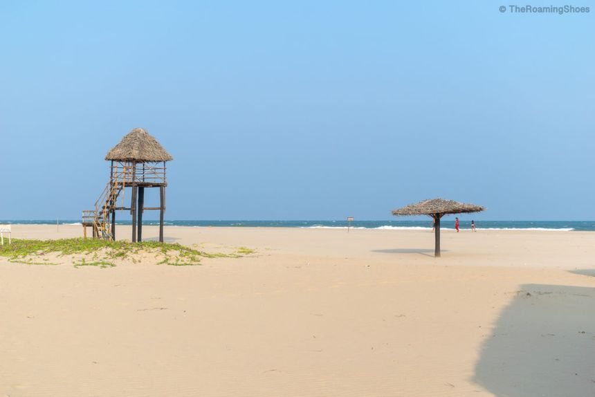

Underrated Places

Cultural
Ahmedabad
Beyond the famous Sabarmati Ashram lies a city brimming with hidden heritage
Jhulta Minara - The mysterious shaking minarets
Manek Chowk Night Market - Midnight food paradise
Adalaj Stepwell - Architectural marvel hidden underground

Serene
Pondicherry
The French quarter is famous, but these spots remain peaceful secrets
Auroville Botanical Gardens - Rare plant species sanctuary
Paradise Beach - Accessible only by boat
Kasha Ki Aasha - Hidden artist collective
Historical
Delhi
Secret spots even locals don't know about in this bustling metropolis
Agrasen Ki Baoli - Ancient stepwell hidden among skyscrapers
Lodhi Art District - Open-air street art museum
Kunzum Travel Cafe - Hidden hub for travelers

Escape
Goa
Beyond the beaches - Goa's best kept secrets
Netravali Bubble Lake - Mysterious bubbling waters
Cab de Rama Fort - Cliffside ruins with epic views
Fisherman's Wharf - Local seafood haven